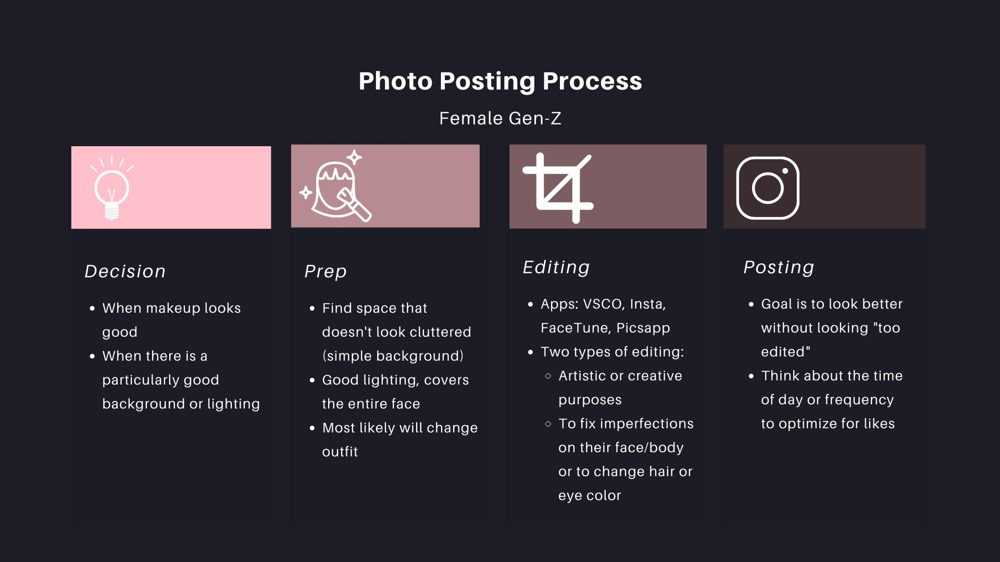

Fixing Social Media Final Project
Daniella DiPaola, Nina Lutz, Anastasia Ostrowski
Ideas from mainstream media.

Female body standards of that decade.

Fashion trends and popular brands.
Popular hairstyles and products.

Popular makeup trends and products.

Things outside the beauty ideal of that decade.

Avoid the “too-skinny look”
Encouraged to "look the part" of a working woman
More curvaceous
“Fit” bodies linked with productivity
Emphasized natural waist
Detailed suits, trousers, platform shoes
Practical, quasi-military styles
Short hair
Precision grooming
"Lovely" faces with blush and red lips
Increased pressure on women of color to straighten and contain natural hair texture.

Marilyn Monroe, Grace Kelly
Cosmetics targeted teens
Heteronormative pressures and images
Busty, voluptuous hourglass
Girdles to achieve shape
Hourglass silhouettes
Fuller, longer skirts and stockings
Unisex styles and jeans
Rock and roll, denim and gingham
Expectation to use beauty products
Expectation to use beauty products
Feminine face, flawless skin
Sculpted brows and neutral eyes
The black community sees accessorized suit styles, popularized by artists like Miles Davis.
Twiggy, Beatniks, Jackie Kennedy, Elizabeth Taylor
Thin and androgynous
Hippie-influenced looks
Miniskirts, PVC and paper dresses
Colorful geometric prints, pop art, pantyhose
Long, flowy hair
Beehive, Sassoon cuts, bouffants, flick ups
Headscarves and home hair dye
Pinky, shimmering lips
Graphical liner, bright shadows
Powdered foundations for "brunette-toned" complexions
Natural hair movement in the mid-late 60s, including the afro in the black community during the Civil Rights movement.
Jane Fonda, Farah Fawcett
Disco and musical influences
Anorexia nervosa escalates as thin is still valued
Hippie and disco styles
Color returns to menswear.
Layered looks, jersey and knitwear popular
Farah flick, shorter cuts, face framing
Perming and cornrows
Punk hairstyles start emerging
Minimal “natural look”
Disco influence with red lips and smoky eyes
Drugstore makeup grows
First black woman on Vogue
More makeup diversity
Perm trend from disco culture
Stonewall Riots saw increased street fashion in the queer community
Fitness empires
Rise of supermodels
Street versus high style epitomized by icons Madonna and Princess Diana.
Thin (dieting) + fitness emphasis (toned bodies)
Punk, anti-fashion, street fashion, bondage clothing
Unisex dressing.
Cult of the healthy body, sportswear, stretch jersey.
Perms and big hair
Mullets and punk styles and Diana
Foundation lighter than skin tone
Vibrant eyeshadows and blushes
Bright, glossy lips
Emergence of goth and hard metal scenes
AIDs crisis changes gay expression through the decade
Kate Moss, Tara Reid, Calvin Klein, and other fashion megas
Images of obesity as a part of public health outreach efforts
Models and thin actresses rise to more fame.
Heroin chic, large breasts, and thigh gaps
Anorexia deaths increase
Extreme thinness celebrated in fashion and increased obesity marketting
Patent leather and space infused styles
Acid wash jeans
Prints
"The Rachel" - structured flip bobs
Crimping and small inserts and accessories
Dark lip liner, frosty glosses, dark reds
Thin, dark eyebrows with light, metallic eyeshadows
Hip hop style gains stride in black communities
Internet communities emerge with new aesthetics
Britney Spears
Giselle Bundchen
Jessica Simpson
Paris Hilton
Abs and toning
Athletic, strong, and thin
Low-rise jeans
Pocketless jeans
Pants will messages on the butt
Halter tops
Bedazzled tops
Straight hair
Side Bangs
High-contrast highlights
The pouf
Flipped ends
Glossy lips
Bronzer/fake tans
Thin eyebrows
Rosy cheeks
Calls for embracing curves and against the diet industry
More discourse in employer discrimatination regarding appearance
Kardashians
Editing as the new normal
Body inclusivity movements
Social media influencers
Wide Hips
Tiny waist
Full lips
Curvy with flat abs
Ath-leisure
Millenial Pink
Streetwear and consumerism fashion
Mom jeans and skinny jeans
Natural hair movement with reemergence of the perm
Ombre hair and brighter hair colors
Wavy and long
Braids
Bold Eyebrows
Heavy liner and smoky eye
Rising beauty guru influencers
Contouring and highlighting
International beauty trends
Bold, matte lips
Rising gender nonconformity
Body positivity movements and demand for representation of all shapes and colors
Increased accountability of cultural appropriation
There were a lot of trends throughout our historical analysis. One of which we considered was Vogue, one of the leading fashion magazines, and data around the average BMI of celebrities and average women.
We looked at BMI trends of women throughout the decades.
We ran analysis on Vogue covers over time, noting dominant
We are able to see that the gap between the average woman and the celebrity widens as time goes on. Furthermore, the average woman's BMI goes up dramatically compared to the celebrity BMI which has stayed more the same. BMI of course is a flawed measurement, but an informative trend to see over time and large population. And this gap is concerning to see widen, as it puts more and more women in the sitaution that they will not be able to see bodies like theirs wihtin media.
DISCLAIMER: BMI is not an inclusive measurement and does not capture the full information of the human body. Furthermore this is not a medical study and should not be read as one.
Vogue has been an American staple since the 19th century. It has long had a place in the fashion and cultural world, especially pre internet. In fact you could argue that magazines like Vogue were the first social networks. Below we have analyzed trends of Vogue covers over the decades, in paritcular through looking at the average of the photos and their composition and lines.
If we consider all the decades over time, we can see some trends emerge.
Overall, one of the trends we can see is that the 1940s and 1950s had a large variety of covers from photos of women to abstract art and pop culture announcements. In the 1960s we see a trend more towards photos of women and in the 1970s and 1980s each photo is focused more on the faces of the models. It is in the 1990s and on that we see larger editorial photoshoots around the whole body.
DISCLAIMER: Vogue covers from Vogue archives. This is computationally generated and subject to error.
It is undeniable that the internet has radically changed how we consume media. As part of this project, we conducted semi-structured interviews with four Gen-Z women ranging from ages 18-24. The goal of these interviews was to get more insights into the photo taking process for these women, from the moment they decided to take a photo to the moment they posted it. Here are some of our findings:

As part of this analysis we interviewed members of Gen Z about their use of photo editting and filtering. We also examined 6 Generation Z influencers and their use of photo editting, by running popular posts of their feeds through software to understand which photos are editted and by what measures they are editted.
Photo light edit either pre or post photo
The angle at which the photo is taken
Editting of the skin
Editting color and contrast of the photo
Editting the body
15 years old, 16.9 million

18 years old, 19.3 million
18 years old, 9.3 million
22 years old, 173 million
17 years old, 13.6 million
As you can see, Kylie actually has the most editting while stars that are younger and gained more popularity via TikTok and video apps that cannot be as editted have less editting. However almost all of these photos have some pretty intense editting, in particular with angles and lighting. This gives more evidence to involvement in the picture taking process than it does into the editting one. There is also a high trend towards utilizing sunlight over unnatural lighting.
DISCLAIMER: All of these results are by computational methods and are subject to error. This is not verified.
Aesthetic standards change over time and this is natural as culture evolves and creates new art and movements. This is natural. However, humans have been using advanced photography to edit their bodies as well as intesive methods to train bodies to match changing standards for a long time. This portion is not natural.
And as social media, as seen above, has made this filtering and editting part of the experience. You cannot go to Instagram without interacting with filters. But what if you could understand that your feed was full of filters?